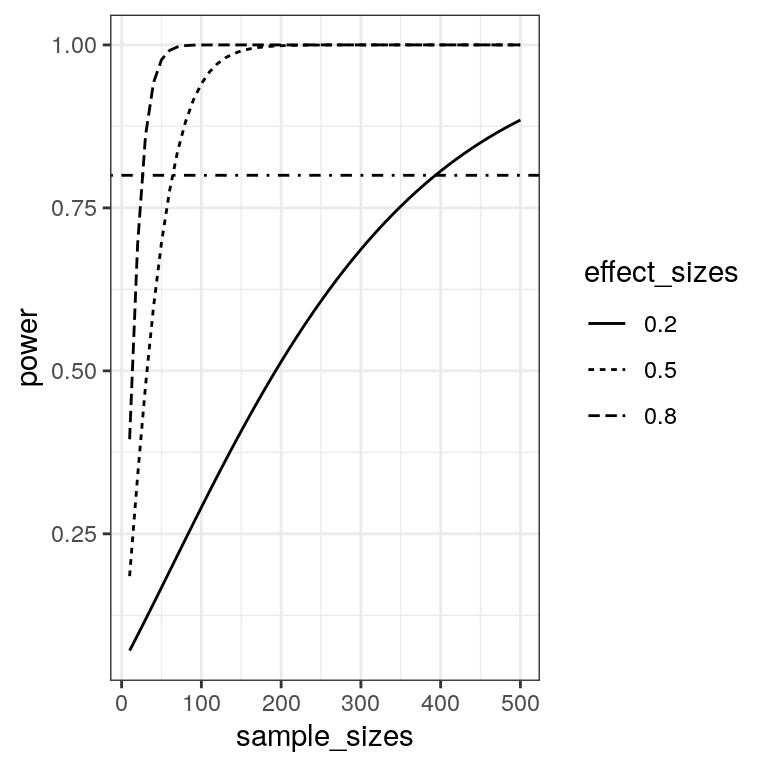

Chapter 9 Statistical power in R
In this chapter we focus on effect size and statistical power.
9.1 Computing confidence intervals
9.1.1 Theoretical
9.1.2 Bootstrap
9.2 Effect Size
9.2.1 Cohen’s d
9.2.2 Pearson’s r
9.2.3 Odds ratio
9.3 Power analysis
We can compute a power analysis using functions from the pwr package. Let’s focus on the power for a t-test in order to determine a difference in the mean between two groups. Let’s say that we think than an effect size of Cohen’s d=0.5 is realistic for the study in question (based on previous research) and would be of scientific interest. We wish to have 80% power to find the effect if it exists. We can compute the sample size needed for adequate power using the pwr.t.test() function:
##
## Two-sample t test power calculation
##
## n = 63.76561
## d = 0.5
## sig.level = 0.05
## power = 0.8
## alternative = two.sided
##
## NOTE: n is number in *each* groupThus, about 64 participants would be needed in each group in order to test the hypothesis with adequate power.
9.4 Power curves
We can also create plots that can show us how the power to find an effect varies as a function of effect size and sample size. We willl use the crossing() function from the tidyr package to help with this. This function takes in two vectors, and returns a tibble that contains all possible combinations of those values.
effect_sizes <- c(0.2, 0.5, 0.8)
sample_sizes = seq(10, 500, 10)
#
input_df <- crossing(effect_sizes,sample_sizes)
glimpse(input_df)## Observations: 150
## Variables: 2
## $ effect_sizes <dbl> 0.2, 0.2, 0.2, 0.2, 0.2, 0.2, 0.2, 0…
## $ sample_sizes <dbl> 10, 20, 30, 40, 50, 60, 70, 80, 90, …Using this, we can then perform a power analysis for each combination of effect size and sample size to create our power curves. In this case, let’s say that we wish to perform a two-sample t-test.
# create a function get the power value and
# return as a tibble
get_power <- function(df){
power_result <- pwr.t.test(n=df$sample_sizes,
d=df$effect_sizes,
type='two.sample')
df$power=power_result$power
return(df)
}
# run get_power for each combination of effect size
# and sample size
power_curves <- input_df %>%
do(get_power(.)) %>%
mutate(effect_sizes = as.factor(effect_sizes)) Now we can plot the power curves, using a separate line for each effect size.
ggplot(power_curves,
aes(x=sample_sizes,
y=power,
linetype=effect_sizes)) +
geom_line() +
geom_hline(yintercept = 0.8,
linetype='dotdash')
9.5 Simulating statistical power
Let’s simulate this to see whether the power analysis actually gives the right answer. We will sample data for two groups, with a difference of 0.5 standard deviations between their underlying distributions, and we will look at how often we reject the null hypothesis.
nRuns <- 5000
effectSize <- 0.5
# perform power analysis to get sample size
pwr.result <- pwr.t.test(d=effectSize, power=.8)
# round up from estimated sample size
sampleSize <- ceiling(pwr.result$n)
# create a function that will generate samples and test for
# a difference between groups using a two-sample t-test
get_t_result <- function(sampleSize, effectSize){
# take sample for the first group from N(0, 1)
group1 <- rnorm(sampleSize)
group2 <- rnorm(sampleSize, mean=effectSize)
ttest.result <- t.test(group1, group2)
return(tibble(pvalue=ttest.result$p.value))
}
index_df <- tibble(id=seq(nRuns)) %>%
group_by(id)
power_sim_results <- index_df %>%
do(get_t_result(sampleSize, effectSize))
p_reject <-
power_sim_results %>%
ungroup() %>%
summarize(pvalue = mean(pvalue<.05)) %>%
pull()
p_reject## [1] 0.7998This should return a number very close to 0.8.